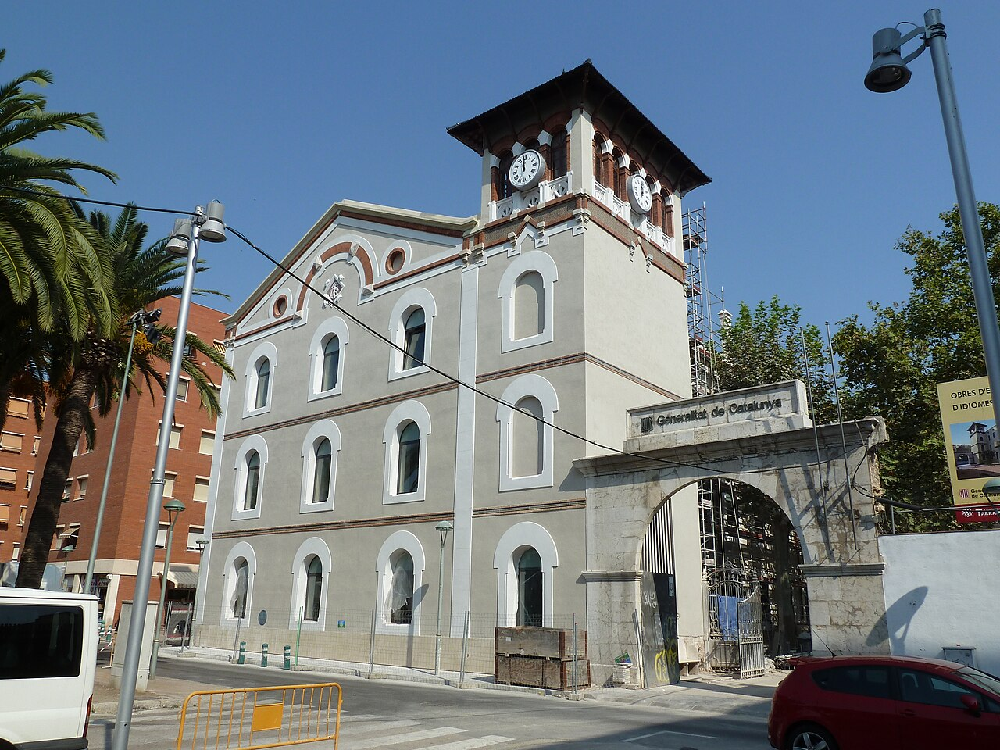
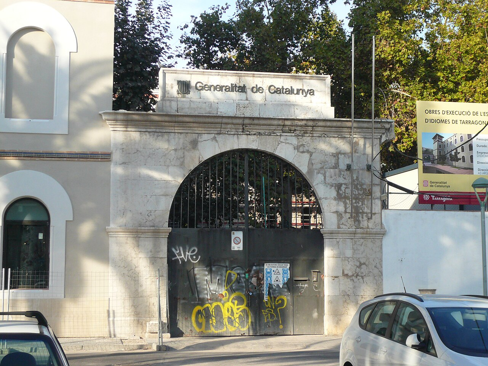
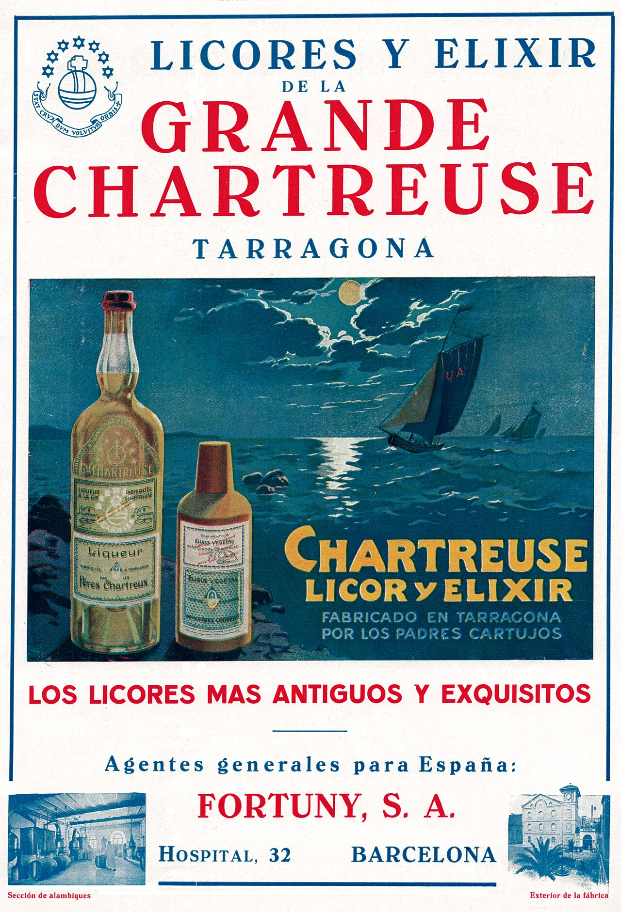

Una mamadeta y un secreto de cuatro siglos
Estos días media Tarragona lleva colgado del cuello un barrilet de plástico con un líquido verde o amarillo dentro. Es Santa Tecla y se bebe mamadeta: Chartreuse amarillo, Chartreuse verde y granizado de limón. La mezcla nació en 1994, cuando un grupo de amigos del Ball de Diables empezó a combinarlos en la barra, y en tres décadas ha pasado de ocurrencia a costumbre fija de la fiesta.
Lo que casi nadie recuerda mientras hace cola es que ese licor no llegó aquí por una campaña de marketing. Llegó en 1903, con unos monjes cartujos expulsados de Francia, y se destiló en Tarragona —en una antigua fábrica de hilados del Barri del Port— hasta 1989. Ochenta y seis años elaborando a doscientos metros del puerto el licor más secreto de Europa.
Un manuscrito de 1605 y dos monjes que no hablan
La historia empieza en París. En 1605, el mariscal d'Estrées entrega a los cartujos un manuscrito con la fórmula de un elixir de larga vida. La receta era tan enrevesada que tardaron más de un siglo en ponerla en pie: el texto no llega a la Grande Chartreuse hasta 1737 y el Élixir Végétal no se comercializa hasta 1764. El licor tal como lo conocemos, verde y amarillo, aparece en 1840.
La fórmula sigue siendo secreta. Son 130 plantas maceradas en alcohol de uva, y solo dos monjes la conocen entera; se la transmiten de generación en generación. El verde sale a 55 grados y el amarillo a 40. El color no se añade: viene de las plantas. Y a diferencia de casi todos los destilados, el Chartreuse sigue evolucionando dentro de la botella. Eso último explica buena parte de lo que viene después.
1903Cómo un licor francés acabó destilándose junto al puerto
En 1901 Francia aprueba la ley de asociaciones y en 1903 los cartujos son expulsados del país. La orden pierde la destilería de Fourvoirie, pero no la fórmula: se la lleva al otro lado de los Pirineos.
Que eligieran Tarragona no fue casual. Los cartujos llevaban setecientos años en esta provincia: en 1194 habían fundado Escaladei, la primera cartuja de la península, en unas montañas del Priorat donde plantaron las viñas que acabarían dando nombre y fama a la comarca. A ese arraigo se sumaban un puerto con salida directa al Mediterráneo y una industria local acostumbrada a trabajar el alcohol. El recinto escogido fue el de la Unión Agrícola, en la plaça dels Infants, que los monjes ya habían comprado en 1882.

El conjunto fabril de la plaça dels Infants, entre las calles Smith y del Vapor. Foto: Deosringas · Wikimedia Commons (CC BY-SA 3.0).
Fábrica textil, destilería, monasterio y escuela de idiomas
El edificio se levantó en 1855 y se inauguró en 1857 como La Fabril Tarraconense: la única fábrica de hilados y tejidos de algodón movida por vapor que tuvo la ciudad. Quebró en 1869. En 1893 un incendio se llevó la cubierta y el arquitecto Pau Monguió rehízo la estructura de madera; en 1907, ya con los monjes dentro, Josep Maria Pujol de Barberà firmó la ampliación que le dio el aire historicista de resonancias mudéjares y la torre que todavía se reconoce desde la calle Smith.
El recinto funcionaba a la vez como fábrica y como monasterio: los cartujos vivían allí, con su clausura, mientras los alambiques trabajaban al otro lado del muro. Según la propia cronología de la casa, el complejo quedó dañado por los bombardeos de 1938. Hoy está catalogado como Bien Cultural de Interés Local.


Por qué una botella tarraconense puede subastarse en cifras de coche
Las botellas producidas aquí llevan la palabra Tarragone y tienen mercado propio. Entre 1921 y 1929 los monjes destilaron también en Marsella manteniendo el mismo nombre comercial, así que para un coleccionista la etiqueta es apenas el principio: cuentan el tapón de corcho, el precinto, el nivel del líquido y la década. Las series VEP, envejecidas diez años en roble desde 1963, son las más buscadas.
El coleccionista más conocido de la ciudad es Eduard Seriol, pastelero de la Pastisseria Rabassó, que guarda más de trescientas botellas. La más antigua es de 1910 y apareció en el cajón de una cómoda. Piezas de ese perfil se han llegado a valorar en subasta cerca de los 30.000 euros. Entre los aficionados corre además una convicción que nadie ha sabido demostrar: que el Chartreuse hecho en Tarragona sabe distinto del que se elabora hoy en Voiron.

Anuncio publicado en la revista Ibérica en abril de 1928: «Chartreuse licor y elixir, fabricado en Tarragona por los padres cartujos». Abajo, dos fotografías de la propia fábrica: la sección de alambiques y el exterior del recinto. Dominio público, vía Wikimedia Commons.
El día que se apagó el alambique
La producción paró en 1989 y la fábrica se cerró con todo dentro: botas, destilador, máquina de vapor, piedras de molino. Durante años el material se degradó y sufrió actos vandálicos. En 1995 la Generalitat compró el inmueble a los cartujos y la maquinaria con valor patrimonial acabó inventariada por el Museu de la Ciència i de la Tècnica de Catalunya. Allí sigue: almacenada en Terrassa y en Cervera, lejos de la ciudad donde trabajó.
El edificio principal se rehabilitó para acoger la Escola Oficial d'Idiomes, que abrió sus aulas en septiembre de 2013. Las naves del resto del recinto siguen vacías.
Siempre he pensado que se debería hacer el Museu del Chartreuse en la antigua fábrica, para no tener que ir fuera a ver las piezas. El licor se hacía aquí, en la ciudad, y es un emblema, sobre todo por Santa Tecla.
Maria del Carme Puig · Associació de Veïns del Port (Diari de Tarragona, mayo de 2026)
Un museo anunciado y un expediente parado
En septiembre de 2025 se supo que la empresa Chartreuse había planteado a la Generalitat volver a la fábrica: un centro de interpretación sobre la elaboración del licor y, sobre todo, la posibilidad de envejecer producto otra vez en aquellas naves para embotellarlo como Chartreuse de Tarragona. El Ayuntamiento lo recibió bien. La Generalitat, en paralelo, tiene previsto invertir unos 2,5 millones de euros en convertir parte del recinto en un espacio cultural, con la compañía Sala Trono entre los posibles ocupantes.
Un año después, el plan sigue quieto. En mayo de 2026 el Diari de Tarragona preguntó a la compañía y la respuesta fue que, por el momento, no deseaban hacer comentarios sobre un proyecto que aún no es oficial. Ni el consistorio ni el Govern han avanzado nada más desde entonces.
En la copaCómo se bebe, más allá del barrilet
Verde, amarillo, VEP · Tres maneras de entenderlo
El verde (55°) es el original: herbáceo, mentolado, con una potencia que ordena la sobremesa. El amarillo (40°) va hacia la miel y el azafrán, es más dulce y más fácil de servir a quien nunca lo ha probado. El VEP, envejecido en roble, se bebe como se bebería un armañac: en copa, a temperatura de sala y sin prisa. Muy frío gana el verde; sobre granizado de limón, a partes iguales con el amarillo, sale la mamadeta que se sirve estos días en las barras de la ciudad.
En la mesa aguanta bien el chocolate negro y los postres cítricos, y hace de digestivo sin necesidad de adornos. En coctelería lleva un siglo largo sosteniendo dos clásicos: el Last Word —ginebra, Chartreuse verde, marrasquino y lima a partes iguales— y el Bijou, donde comparte copa con ginebra y vermut rojo. Dos recetas de bar americano de los años veinte que, sin saberlo, se hacían con licor destilado en Tarragona.
Y nosotros tambiénUna fachada por la que pasamos sin mirar
Los Gourmets de Tarragona hemos pasado cientos de veces por delante de esa fachada de la calle Smith camino del Serrallo, sin pensar que allí dentro se guardó durante 86 años una de las fórmulas más protegidas del mundo. El día que el museo pase del anuncio a la obra, ya tenemos visita apuntada en el calendario. Mientras tanto, queda el barrilet y una historia que vale la pena contar en la mesa.
Fuentes consultadas: Diari de Tarragona, Diari Més, Tarragona Ràdio, Tarragona Experience, chartreusetarragona.com, Viquipèdia (Fàbrica Chartreuse), Patrimoni de la Generalitat (Cartoixa d'Escaladei), Museu de la Ciència i de la Tècnica de Catalunya. Imágenes: Munfarid1 (CC BY-SA 4.0), Deosringas y Pere prlpz (CC BY-SA 3.0) vía Wikimedia Commons; anuncio de la revista Ibérica (1928), dominio público.
Newsletter
¿Quieres recibir la próxima crónica antes que nadie?
Crónicas de los restaurantes visitados, vinos recomendados y novedades del Camp de Tarragona. Una vez al mes, sin ruido.
Sin spam · Baja cuando quieras.
Más historias del Camp de Tarragona
 Curiosidades
Curiosidades
Reus, París, Londres · La capital mundial del vermut
Más de treinta elaboradores y una frase que era literal: el precio del aguardiente se fijaba en tres plazas y una de ellas estaba aquí.
Leer → Vinos
Vinos
Els Cinc Magnífics · DOQ Priorat
La comarca que los cartujos de Escaladei plantaron de viña en el siglo XII y que cinco forasteros devolvieron al mapa ochocientos años después.
Leer →